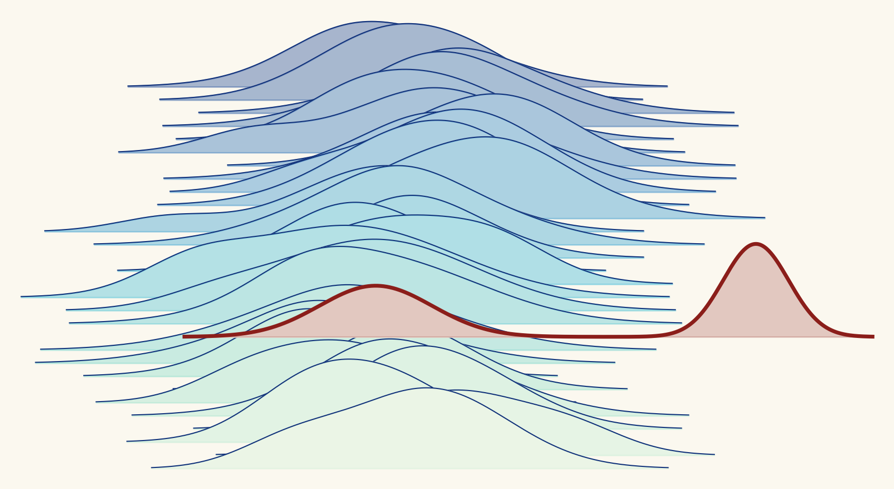

We review the benchmarks used to measure AI progress, and publish what we find with the evidence to check it.

Benchmark scores decide which AI models get used, which research gets attention, and how fast people think AI is improving. Most of those scores are never checked by anyone outside the team that built the benchmark. We check them.
Our aim is simple: every headline score should come with what you need to read it. What the benchmark really measures, where its grading goes wrong, and whether its ranking holds up.
We do this in public. Every review uses a published rubric, cites its evidence, and ships the code that reproduces its numbers, so anyone can check our work too.
A grader that rejects correct work, or accepts a shortcut, changes the score and nobody notices. Every benchmark we have been able to fully review so far had this problem.
AI agents are good at raising a score without doing the task. If a benchmark allows it, its leaderboard rewards it.
Benchmark teams move on to the next release, and readers can't inspect the code behind a leaderboard. Independent review fills that gap.
We read the tasks, the grading code and, where they are released, the agents' own runs, and apply a public rubric to all of it.
Each review gives a verdict, lists every error we count with its evidence, and includes the scripts that reproduce our numbers.
Benchmark developers can reply, and we link their response. A fixed version of a benchmark gets a new review.
We apply Epoch AI's published benchmark review rubric as written. Read the methodology.
Every error we count points to a file and line, a reproduction or a log. Suspicions without evidence are listed but not counted.
Each review ships the scripts that fetch the public data and rebuild our counts.
Developers can respond to any review, and their response is linked from it. Corrections are made in the open.
We don't review benchmarks we helped build, and we are not affiliated with any benchmark we review.
Each review says what we could not inspect and how the reading was divided between people and tools.
Write a review to our rubric and evidence standard, and we will check it and publish it.
How to contribute →Corrections, developer responses and questions welcome at
reviews@openbenchmarkreview.org